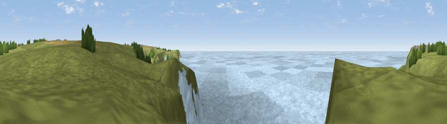

Viewpoint near Sennen
#9776 in England · top 43% of its area beats it · near SennenThe view, rendered

A 360° render of this exact spot computed from the terrain model, tree cover and land cover — summer colours, afternoon light, calibrated against photographs of famous viewpoints. Real trees, hedges and buildings will differ in detail.
The panorama
Grey silhouette: terrain skyline in each direction (720 bearings, Earth curvature and refraction included). Dashed green: skyline with trees (+15 m) and buildings (+8 m) as obstacles. Blue strip: how far the ground is visible on each bearing.
Where the view opens
Wedge length = distance to the farthest visible ground on that bearing (vegetation-aware). Rings at 10, 25 and 50 km.
What fills the view
71% water · 28% grassland ·
Angular shares of the visible panorama (visual magnitude), not map area. Landscape diversity 0.29 (0–1 Shannon).
Key numbers
More beautiful places nearby
The staircase of upgrades: each row has a higher view potential than everything closer. Driving times are estimates from straight-line distance, calibrated against real road routing — check an actual route before setting out.
| Place | Direction | Drive | Score |
|---|---|---|---|
| Viewpoint near Porthcurno | SE · 2 km | ~6 min | 66.5 |
| Viewpoint near Porthcurno | SE · 3 km | ~7 min | 73.1 |
| Viewpoint near Bosavern | NE · 5 km | ~12 min | 82.4 |
| Viewpoint near Morvah | NNE · 13 km | ~25 min | 83.2 |
| Viewpoint near Porthmeor | NNE · 14 km | ~25 min | 84.8 |
| Rosewall Hill | NE · 20 km | ~35 min | 88.0 |
| Viewpoint near Combe Martin | NE · 176 km | ~196 min | 88.9 |
| Holdstone Hill | NE · 177 km | ~198 min | 90.2 |
50.05841, -5.70767 · source: screening · position refined by local search. Computed location — check access rights before visiting.